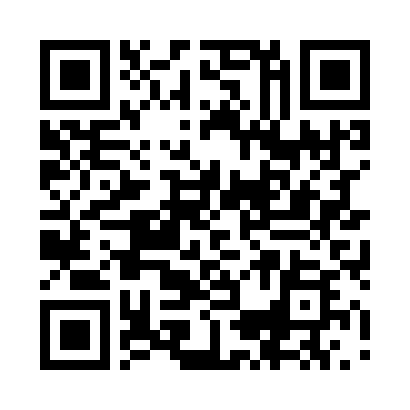

Escuta ativa
Participação e cidadania
Uma carta para o futuro do Paraná.
Suas escolhas de hoje podem inspirar um controle público mais íntegro, próximo das pessoas e preparado para os desafios de amanhã.
Use seu celular para participar.

Aponte a câmera
Escolha as prioridades que quer ver no futuro.
O QR Code abre a experiência no seu celular.